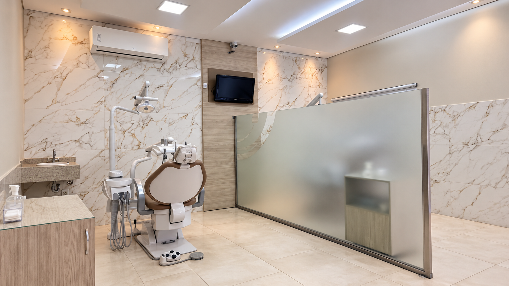
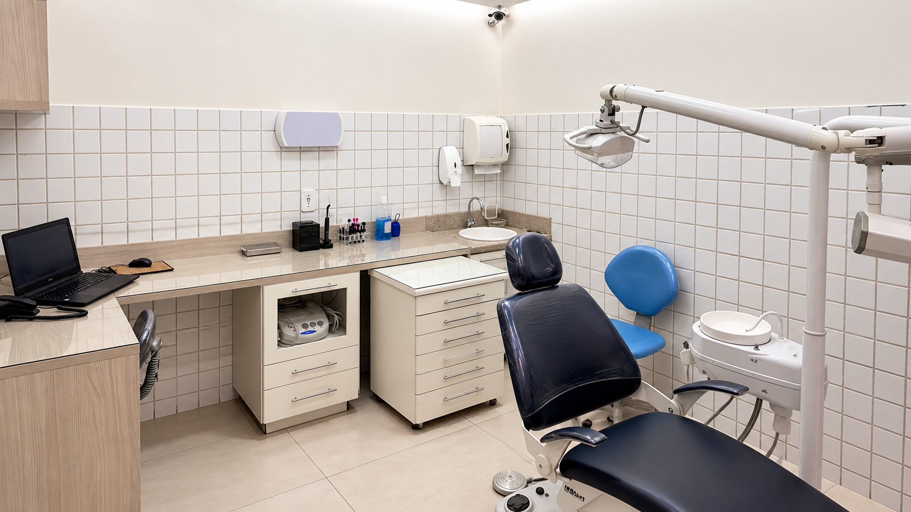
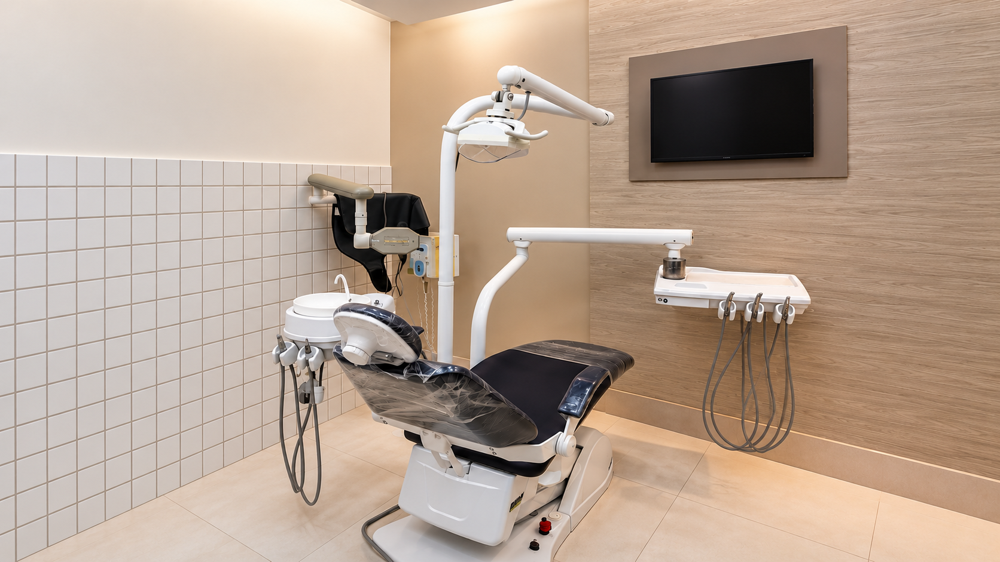
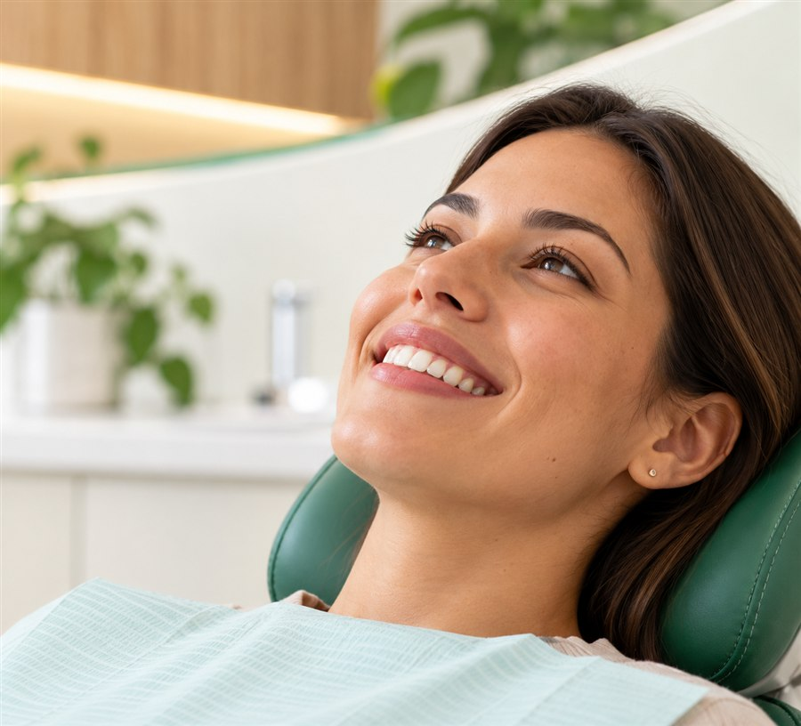
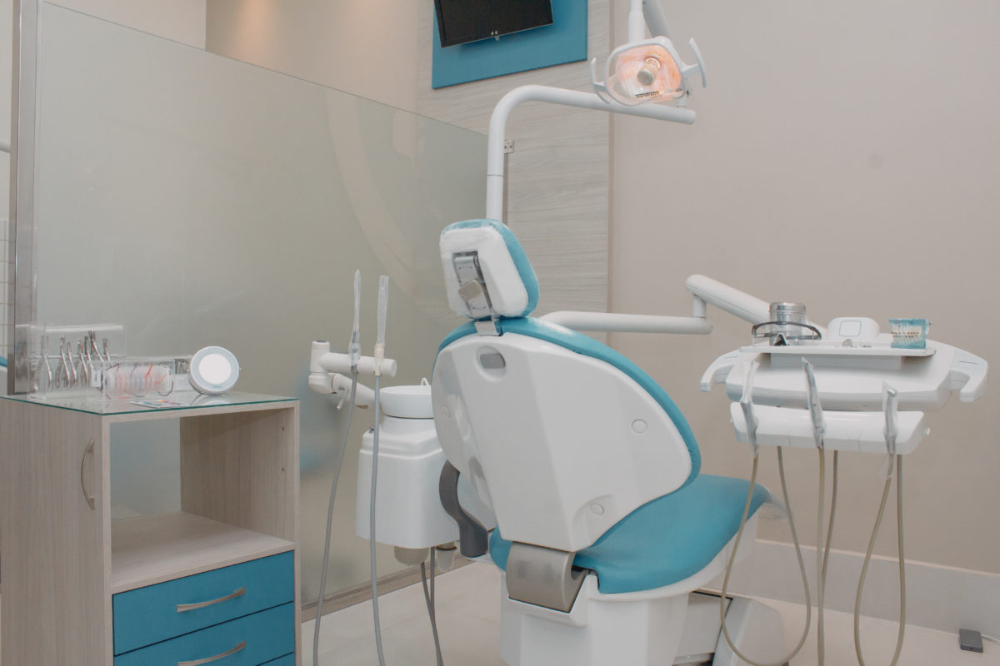
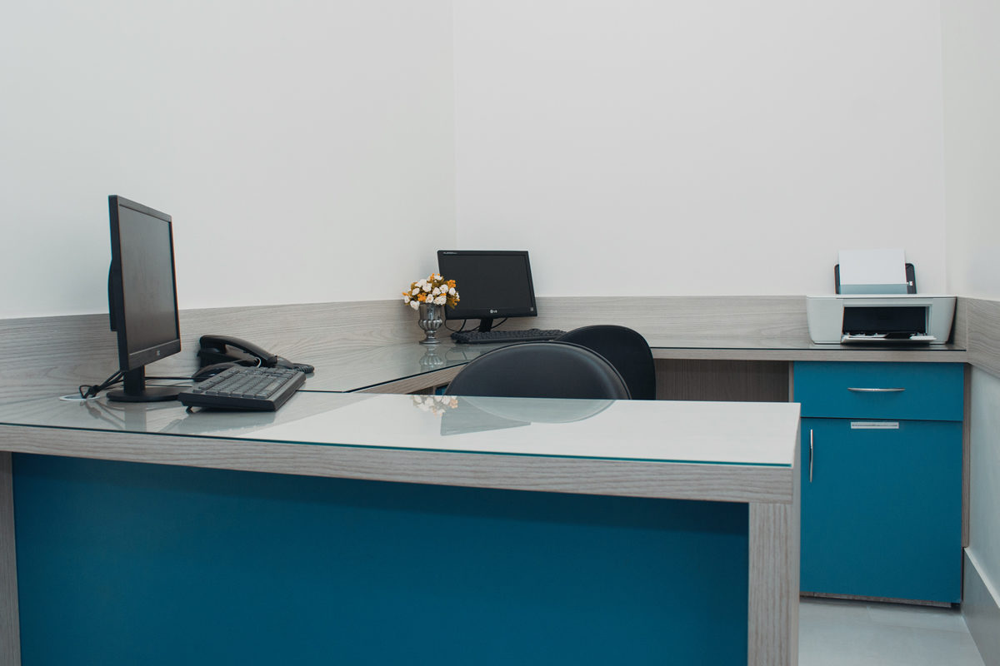
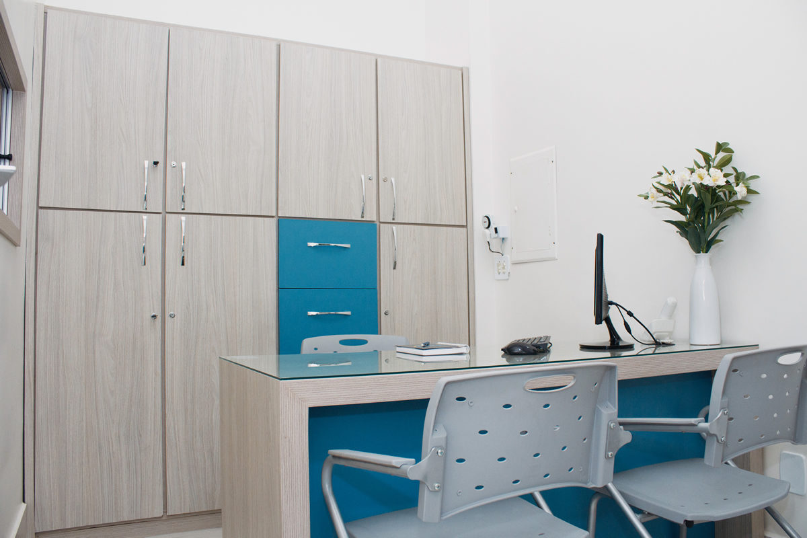

Passo a passo de uma boa higienização com aparelho
Cuidados essenciais para manter dentes, gengiva e aparelho bem higienizados durante o tratamento.
Ler artigo



Clínica multidisciplinar com mais de
40 procedimentos em um só lugar.
Nossos tratamentos
Diversas especialidades odontológicas em um só lugar,
com planejamento integrado e um atendimento feito para você.

Do acompanhamento preventivo aos tratamentos mais completos, cada plano é pensado de forma integrada.

40+procedimentosPlanejamento para alinhar o sorriso e acompanhar cada fase do tratamento com proximidade.
Conversar com a equipe

A Clinimed nasceu em 2010, idealizada e administrada por dentistas com o propósito de tornar o cuidado odontológico mais próximo, completo e humano.
Hoje, reunimos diferentes especialidades em uma estrutura ampla e acolhedora, com planejamento integrado para que cada paciente seja acompanhado por inteiro.
Nossa atuação multidisciplinar conecta especialidades para tornar diagnósticos, planejamento e acompanhamento mais simples.
Agendar uma avaliaçãoRenatha conta que encontrou conforto durante quase dois anos de tratamento e transformou uma meta pessoal em uma conquista marcante.
Atendimento humanizado é ouvir, explicar e caminhar junto. É assim que fazemos desde o primeiro contato.
Cuidado que respeita o seu tempoOrientações simples para ajudar você a entender melhor a saúde do seu sorriso.
Cuidados essenciais para manter dentes, gengiva e aparelho bem higienizados durante o tratamento.
Ler artigoFale com a nossa equipe e encontre o melhor horário para sua avaliação.
Agendar pelo WhatsApp